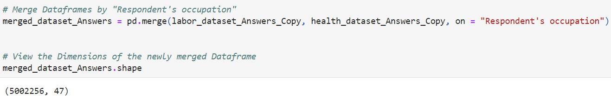
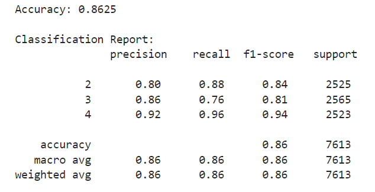

METHODS
Data Cleaning
The 4 datasets that we will be reading and using for this project are messy and in need of preprocessing, so we first go through some data cleaning.


Using a dictionary, we rename the column names of Answers dataframes to match that of the Codes Dataframes.
Next, we replace the empty spaces with NumPy NaN so that we can use dropna() to remove these data points. Let's define additional conditions for our dataframes (in respect to Health and Labor Dataframes):
(1) If at least 60% and 80% of the data of a column is missing, for each Dataframe respectively, we remove the entire column from our dataframe.
(2) Each respondent that has at least 3 and 1 missing entries, for each Dataframe respecively, will be removed.
(3) Drop all remaining columns with at least 1 missing value.
Finally, we convert the data type of the entire dataframe of all Object columns to 64-bit integers using astype().
Data Exploration
Additionally, we convert other values so we count the answer I DON'T KNOW as 0, and the 6 possible answers of the Health status column to 3 different answers instead -- 1-2 for Great Health, 3 for Moderate Health, and 4-5 for Poor Health.
We merge the Labor and Health datasets together using the merge() function. This performs an INNER JOIN operation between the two. Then, let's view the dimensions of this newly merged dataframe.
We have a problem as 5002256 IS WAY TOO MUCH. So, we filter out a percentage of the dataframe based on the rows. We initialize a starting point of where we want the "cut" to happen then filter out the next 0.25% of our Dataframe. This should leave us with about 12,000 rows, which is just about enough for our devices to still withstand.
Machine Learning
Before continuing, let's quickly go through some other popular Machine Learning Classifier Models too so that we can get a feel of what we are dealing with. The models are the ones used below:
1. Support Vector Machine: 68.55% Initial Accuracy
2. K-Nearest Neighbors: 62.74% Initial Accuracy
3. Naive Bayes: 66.68% Initial Accuracy
The selected model is the well-known RandomForestClassifier from the scikit-learn Machine Learning Library. A Random Forest Classifier is an ensemble learning algorithm used for classification tasks similar to ours. It combines multiple decision trees to create a more accurate and robust model.
For the purposes of the project, this is what will be used in order to predict the Health Status of an individual. The feature variables are going to comprise of the respondent's Work-related, Health-related, and Demographical Background. Using the train_test_split method, 70% of the data will be for training while 30% will be for testing.
Let's fit and predict the "vanilla" version of our Model (without any enhancements) and see how it fairs.
ACCURACY REPORT: 69.27%
We can do better so let's aim for higher than 75%. There is too much data that does not match the model, but where exactly?
One, comes from the several columns where most respondents answered a 0 instead of a 1, and the other comes from the low F1-Score 0.16 of Class 4, indicating an existing Class Imbalance.
To fix these problems, we do these three things:
(1) NORMALIZATION: Using the StandardScaler() method, let's adjust the values to a common scale so that the Model can better compare the data points to each other.
(2) CLASS IMBALANCE: Using SMOTE(), the "Synthetic Minority Over-sampling Technique" method, let's balance the Class Distributions by randomly increasing minority class data points.
(3) FEATURE SELECTION: Finally, using RFECV(), also known as "Recursive Feature Elimination", let's select and filter out the most relevant columns to our Model.
ACCURCAY REPORT: 86.25%
Perfect! Just three major adjustments were all we needed in order for us to reach our goal.
RESULTS
CONCLUSION
As we have established, Precision is the measure of how many of the Health Status predictions were actually correct. A Precision of 0.80 for the "Great" Health Status means that 80% of the predictions that the Model made for the said Class (Class 2) were correct. Similarly, 86% of the predictions for the "Moderate" Health Status and 92% for the "Poor" Health Status were accurate.
Meanwhile, once again, Recall measures how well the model identifies all actual positives in each class. The Recall for the "Great" Health Status is 0.88, indicating that the model correctly identified 88% of the individuals who actually reported "Great" Health Status. For the "Moderate" Health Status, the Recall is 0.76, meaning 76% of the true "Moderate" cases were captured by the model, and for the "Poor" Health Status, the model successfully identified 96% of the actual cases.
F1-Score provides a balance between Precision and Recall. In this context, an F1-Score of 0.84 for the "Great" Health Status indicates a good balance between correctly identifying actual positives and minimizing false positives. As for the "Moderate" Health Status, the F1-Score is 0.81, suggesting a more moderate balance. Lastly, the "Poor" Health Status boasts a high F1-Score of 0.94, reflecting an excellent balance between Precision and Recall.
Support represents the actual number of instances for each Health Status in the dataset. There are 2525 instances of the "Great" Health Status, 2565 instances of the "Moderate" Health Status, and 2523 instances of the "Poor" Health Status after using SMOTE() for Over-sampling. Afterwards, we have Macro Avg, which calculates the average of Precision, Recall, and F1-Score across all classes without considering the class distribution. Correspondingly, we also have the Weighted Avg, which takes into account the number of instances in each class. Both of these Averages measure around 86%.